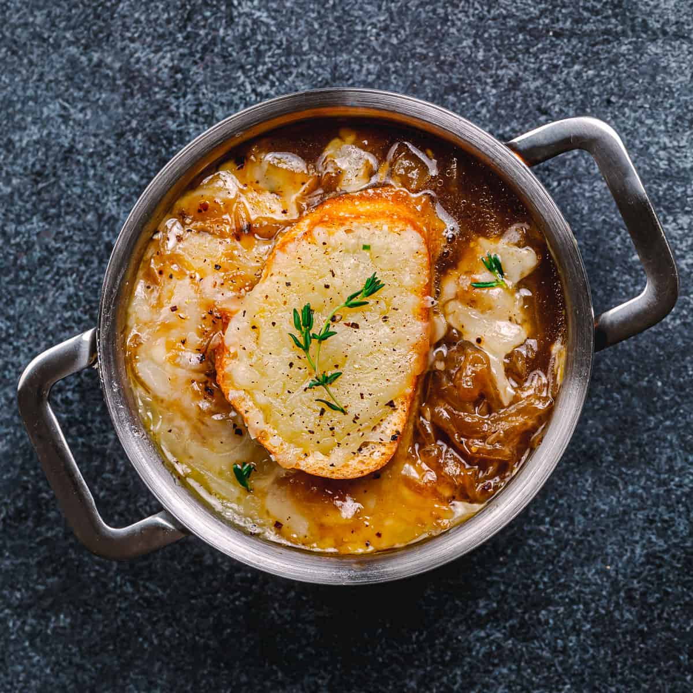

French Onion Soup

Ingredients
- 1 stick (8 tablespoons) unsalted butter, softened
- 1 1/2 teaspoons minced garlic
- 2 tablespoons finely chopped fresh flat-leaf parsley
- 1 tablespoon minced shallot
- 1 7-ounce can snails, rinsed
Preparation
Step 1
- Preheat oven to 400°F.
Step 2
- Purée butter, garlic, parsley, and shallot in a food processor. Season with salt and pepper.
Step 3
- Divide half the garlic butter among sterilized snail shells. Stuff with snails (1 per shell) and
remaining garlic butter.
Step 4
- Bake 10 minutes.